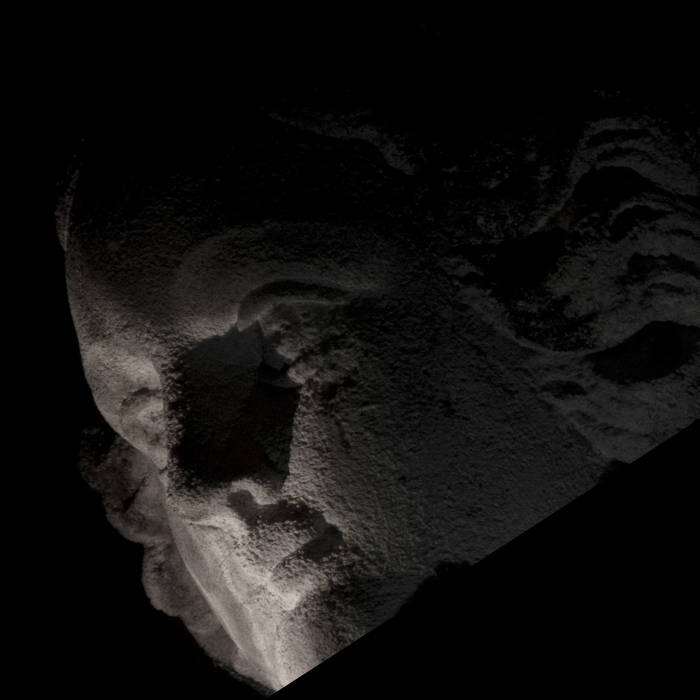

- Présentation
- Photos
- Discographie
- Contact
Prenez contact par email : subconscient.band@gmail.com
Ou par téléphone au : 0662637060
Cet album démontre le travail et l'évolution du groupe dans le travail et le temps. Il aborde des sonorités plus electroniques soutenue d'une basse (orgue). Le piano est toujours présent sur le nouvel opus mais il est abordé d'une manière différente, il est plus ou moins en retrait par rapport a Whales Chant. Ce nouvel album reflète l'instant présent d'un passé méconnu. Du post rock au trip hop il mixe un grand nombre d'idées survenues au fil des mois de préparation.
Whales Chant aborde un son vraiment brut ou la note vient toucher la batterie sur un rythme soutenu et haletant, le morceau est cousu de manière linéaire tout en jouant sur des rebondissements innatendus. Avec une premiere partie essentiellement composé de piano et de violoncelles.
A noter une fin completement aéerienne et post rock melant deux guitares un clavier à effets et une batterie soutenue.

{kind=link}
{kind=link}
{kind=link}
{kind=link}
{kind=link}
{kind=link}
 Mouvant comme les grands espaces qu'il dépeint, le duo Subconscient trace avec rigueur et sensibilité un décor dans lequel se croisent des fantômes, héros d'un passé violent, et des passions vindicatives. Chaque mouvement se fait libre et abstrait, pour l'esprit et son absence. A la lumière marine et à l'ombre de sa force, chaque souffle humain se fait murmure face à l'océan. Chaque histoire devient silence apaisé et mélancolique. Un silence respecté, lointain. C'est dans l'introspection et l'improvisation que l'écriture cinématique de Subconscient donne vie à un romantisme post-rock plongeant au plus profond de l'âme humaine pour y explorer une mémoire tourmentée. Dans la puissance de la composition et la retenue du corps. Puis dans la retenue de la note et la puissance de la frappe. Entre colère refoulée et souvenirs sublimés. Entre onirisme tempétueux et calme lumineux.
{kind=link}